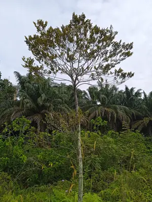

pranet · 出典付きの植物図鑑
ニクズク ☠
Myristica fragrans Houtt. · Myristicaceae

ニクズク は、ニクズク科ニクズク属の常緑高木の1種であり、香辛料のナツメグおよびメースの原料となる。インドネシアのモルッカ諸島（香料諸島）原産であるが、現在では世界中の熱帯域で栽培されており、グアテマラやインド、インドネシアでの生産量が多い。雌雄異株（雄花と雌花が別の個体につく）であり、花は小さく、黄白色でつぼ形（図1）。果実は熟すと縦に裂開し、赤い仮種皮で包まれた種子が露出する（図1）。この仮種皮がメースに、種子中の胚乳がナツメグになる。胚乳は生薬ともされ、肉荳蔲（ニクズク）とよばれる。
出典: Wikipedia 日本語版「ニクズク」 · CC BY-SA 4.0
異名: Aruana silvestris Burm.f., Myristica amboinensis Gand., Myristica aromatica Lam., Myristica aromatica Sw., Myristica laurella Gand., Myristica moschata Thunb., Myristica officinalis L.f., Myristica philippinensis Gand., Palala fragrans (Houtt.) Kuntze
同定や利用は自己責任でお願いします。この図鑑だけを根拠に野生の植物を食べないでください。
出典
- 学名: World Flora Online Plant List 2026-06 · CC0 1.0
- 名前: Wikipedia の記事名と Wikidata · CC0 1.0（Wikidata）。記事名は事実
- 説明: Wikipedia 日本語版「ニクズク」 · CC BY-SA 4.0
- 食用・毒性: World Checklist of Useful Plant Species (Diazgranados et al. 2020, RBG Kew) · CC BY 4.0
- 分布: World Checklist of Vascular Plants (WCVP), RBG Kew, version 2026-06-04 · CC BY 3.0
このページは pranet のデータから自動生成しています。コードは MIT、データは項目ごとのライセンス（説明）。